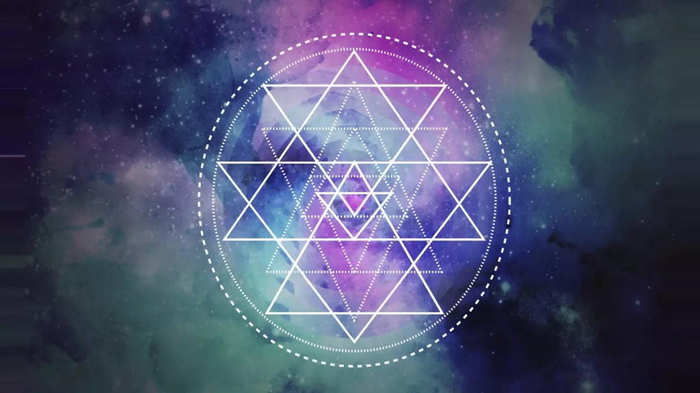

"When meditation is mastered, the mind is unwavering like the flame of a lamp in a windless place." – Bhagavad Gita 6.19
108 is a number whose reverence is so pristinely upheld in Sanatana Dharma that is present everywhere from scriptures to rituals to meditation. There are:
1. 108 Names of Deities – Many Hindu gods and goddesses have 108 sacred names (e.g., Vishnu Ashtottara Shatanamavali).
2. 108 Forms of Meditation – Some tantric and yogic traditions speak of 108 different techniques or states of meditation.
3. 54 Sanskrit Letters x 2 = 108 – Sanskrit has 54 phonetic sounds; each has a Shiva (masculine) and Shakti (feminine) aspect = 108 total divine vibrations.
4. 108 Pithas (Sacred Sites) – In some accounts, there are 108 Shakti Pithas (sacred sites to the Goddess) across India and Asia.
5. 108 Gopis of Vrindavan – Krishna is said to have danced the Rasa Lila with 108 principal Gopis.
6. 108 Sins in Hinduism and Buddhism – Symbolically used to represent the various human delusions or karmic hindrances to be overcome.
7. 108 Upanishads – The Muktikā Upanishad lists 108 principal philosophical texts passed down from rishis.
8. 108 Mantra Repetitions (Japa) – A japa mala has 108 beads to keep count of mantra recitations.
9. 108 Sun Salutations (Surya Namaskar) – Yogis sometimes perform 108 sun salutations as a sacred offering on equinoxes, solstices, or auspicious days.
10. 108 Breaths in a Day (Deep Yogic Breathing) – It is said that if one can remain aware of all 108 deep breaths in a day, one may attain enlightenment.
11. Pranayama Cycles – Advanced breathwork sequences are sometimes structured around repetitions of 108.
12. 108 in Temple Architecture – Many temples (e.g., in South India or Nepal) have 108 steps symbolising spiritual ascent. The Brihadeeshwara Temple in Thanjavur has a height of 216 feet, which is 108 x 2. The Koh Ker Pyramid in Indonesia is 108 ft tall. Stonehenge’s diameter has been measured to be 108 feet in diameter.
13. 108 Offerings or Lamps – Rituals often include 108 offerings of flowers, flames, or other sacred items.
14. 108 Bells or Chimes – In East Asian Buddhist temples, a bell is struck 108 times to end the year and purify the mind of 108 defilements.
15. 108 Sacred Sites in Japan – In Buddhism-influenced Japan, there are 108 temples or pilgrimage points on specific routes.
16. 108 Sacred Sounds or Frequencies – Some traditions use 108 as the number of sacred tones in a complete cycle of universal sound.
17. Buddhist Bell Ringing on New Year’s Eve (Joya no Kane) – In Japan, temple bells are rung 108 times to cleanse the 108 worldly desires.
18. The cosmic dance of Lord Shiva, known as the Tandava, is said to have 108 postures.
108 saints are celebrated in Japan and are known as Vajradhatu.
In Buddhism, the Buddha is said to have 108 names, and there are 108 lamps devoted to him. Most Buddhist temples usually have 108 steps and 108 columns.
The division of the Christian holiday from Soul’s day, which is on November 2nd, to Christmas Day on 25th December, has 54 days and 54 nights. The significance is the fact that within those 2 dates, light transforms into darkness a total of 108 times, and the reverse also occurs the same number of times.
In Tibetan legends there are 108 Masters and 108 initiates.
23. In the Sri Yantra, there are marma points or energy centres where three lines intersect. There are 54 of these intersections. Each intersection has a male and female quality (known as Shiva and Shakti), and 54 x 2 = 108. The Sri Yantra is said to be a microcosm of the cosmos, as well as the human body.
So why 108? Was this just a random number picked out of superstition?
108 is not just a number at all, but a cosmic ratio that is the basis of our existence.
If someone were to ask you to draw a picture of the Sun and the Moon in the sky, they would be about the same size in your drawing, but we all know that the Sun is way larger than the Moon. So, why is it that they look about the same size? Well, the distance from the Sun to the Earth is about 150 million km, and the Sun’s diameter is about 1.4 million km, and if we calculate the ratio of the distance from the Sun to the Earth to the Sun’s diameter, we get a ratio of about 108:1. The distance from the Moon to the Earth is about 384,000 km and the diameter of the Moon is about 3475 km and if we calculate the ratio once again, it is about 108:1.
If this ratio were not in place, then life would not be possible, as life cannot exist too close or too far from the Sun. The Moon similarly controls the Earth’s tides, and if this ratio were not in place, life would also not be possible. The River Ganga that has nourished Indian civilisation for millennia also spans a longitude of 12 degrees (79 to 91) and a latitude of 9 degrees (22 to 31), and 12 x 9 = 108. Vedic astrology is a lunar-based tradition, and the metal silver is correlated to the Moon, which has an atomic mass of silver is 108.
This is not the only way in which we owe our lives to 108. We breathe approximately 21,600 times in a day, and half of this is 10,800, which is nothing but 108 x 100. According to Ayurveda, the human body has 108 marma (vital energy points) linked to health and consciousness and in yogic anatomy, the heart chakra (Anahata) is where 108 nadis (subtle energy channels) converge.
108 is a multiple of 9 that is also essential in Sanatana Dharma. There are 18 Puranas, 18 Chapters of the Bhagavad Gita, and the Mahabharata lasts for 18 days, and there are 18 Parvas in the Mahabharata. Scientifically speaking, the average resting heart rate of a healthy adult is 72 beats per minute (bpm), and most geometry is connected to 9, with all shapes having an angle sum that adds up to a multiple of 9.
The other multiple of 108 is 12, which is also so significant in our lives. There are 24 hours in a day, 12 inches in a foot, and 12 months in a year. We have 12 pairs of ribs, 12 cranial nerves, the atomic mass of a carbon atom that composes all of us is 12, puberty also starts around the age of 12, and we consume about 12 KiloCalories every 12 hours, which is about 120 Watts of Power a day. In Sanatana Dharma, there are 12 Jyotirlingas, and there are 12 petals of the Heart Chakra, whereas in Christianity, there are 12 Apostles of Jesus, 12 corners of the cross, 12 Tribes, and 12 Legions of Angels.
As a number, 108 is also very unique as it is equal to 1^1 x 2^2 x 3^3, and 108 is also divisible by the sum of its digits, making it a Harshad number, which in Sanskrit means “joy-giving.”
2 sin (108/2 = Golden Ratio
Therefore, 108 is not some random number but the cosmic ratio that forms the bedrock of our existence from our breath, anatomy, and wellbeing, which has been recognised universally as the proportion in which God created us. The mathematical properties of 108 are astounding, and the sheer number of ways that it surrounds us is unbelievable.
"When meditation is mastered, the mind is unwavering like the flame of a lamp in a windless place." – Bhagavad Gita 6.19

Sanatana Dharma and Jewish Mysticism (Kabbalah)

Did you know that Saraswati is worshipped in Japan as Benzaiten?
For any queries or meaningful conversations, feel free to reach out to me via email.